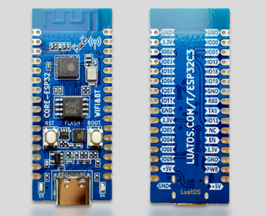
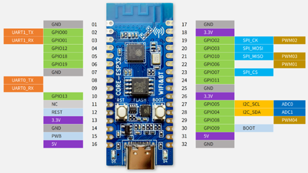
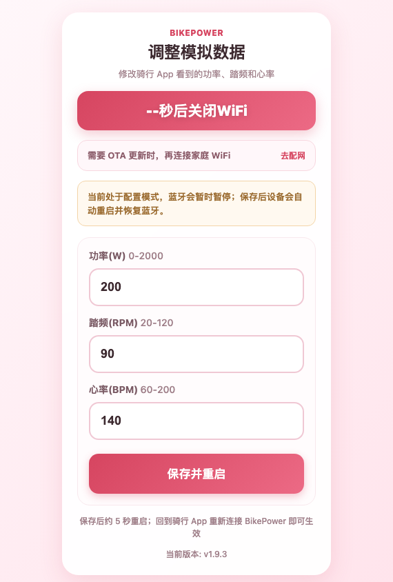
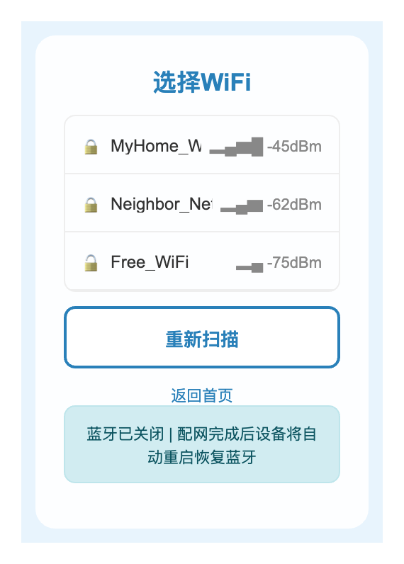
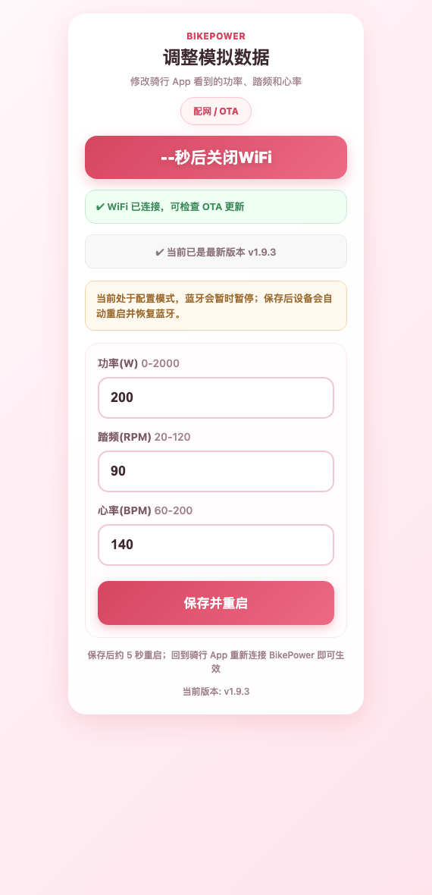
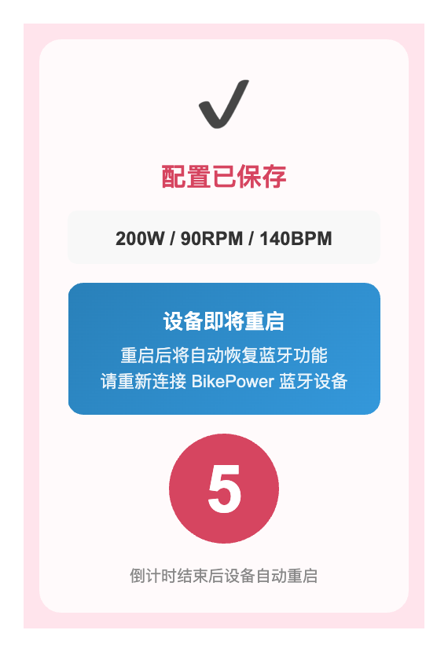
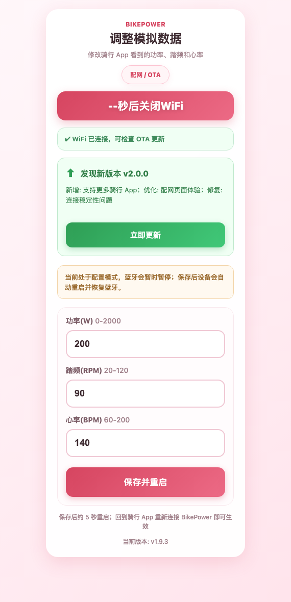
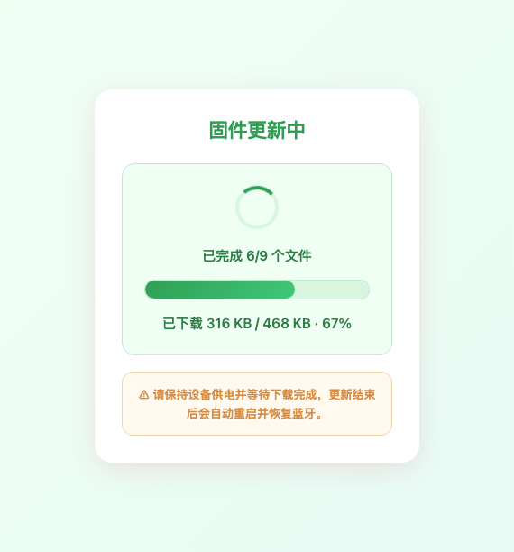

BikePower 用户使用手册
适用设备：合宙 CORE ESP32-C3 蓝牙功率计模拟器
适用固件：v1.9.4+
适用人群：骑行软件用户、测试人员、开发调试人员
1. 产品简介
BikePower 是一个基于 ESP32-C3 的蓝牙功率计模拟器，可向骑行 App 模拟输出功率、踏频和心率数据。它适合室内骑行训练、骑行软件联调、BLE 功率计协议学习和演示。
| 能力 | 说明 |
|---|---|
| 蓝牙功率计 | 模拟 Cycling Power Service，输出 0-2000W 功率数据 |
| 心率模拟 | 模拟 Heart Rate Service，输出 60-200 BPM 心率数据 |
| 踏频模拟 | 通过曲轴转数和时间戳模拟 20-120 RPM 踏频 |
| 按钮控制 | 短按降低功率，中按提高功率，长按进入配网确认 |
| WiFi 配网 | 通过手机浏览器配置功率、踏频、心率和家庭 WiFi |
| OTA 更新 | 配网后在线检查版本，下载差异文件并自动回滚保护 |
| LED 指示 | 用 D4 LED 显示广播、连接、确认、配网和 OTA 状态 |
注意：本设备输出的是模拟数据，不是实测功率，不能替代真实功率计用于正式训练评估或比赛数据记录。
1.1 第一次使用检查清单
| 步骤 | 检查项 | 正常现象 |
|---|---|---|
| 供电 | Type-C 线缆连接稳定 | D4 LED 开始慢闪 |
| 蓝牙 | 骑行 App 搜索传感器 | 看到 BikePower |
| 连接 | 选择功率计服务 | D4 LED 常亮 |
| 数据 | 进入骑行页面 | 显示功率、踏频和心率 |
| 调节 | 短按或中按 BOOT | 功率每次变化 10W |
如果某一步不符合预期，请先按 RESET 重启，再参考第 7 节常见问题排查。
2. 硬件说明
2.1 开发板外观

2.2 引脚参考

| 硬件 | 项目使用 | 说明 |
|---|---|---|
| BOOT 按钮 | GPIO9 | 调节功率、进入配网确认窗口 |
| D4 LED | GPIO12 | 状态指示灯，高电平点亮 |
| Type-C | 供电/烧录 | 推荐使用 Type-C 供电 |
| RESET | 重启设备 | 异常时可手动重启 |
2.3 供电注意事项
- 推荐使用 Type-C USB 供电。
- 如通过排针供电，请确认电压和接线正确。
- 所有 GPIO 都是 3.3V 电平，不能直接接入 5V 信号。
3. 快速开始
3.1 上电
- 使用 Type-C 数据线连接开发板和电脑、充电器或移动电源。
- 等待 D4 LED 慢闪，表示设备正在蓝牙广播。
- 如果 LED 不亮或没有状态变化，按一下 RESET 重启。
3.2 连接骑行 App
- 打开手机、电脑或骑行设备上的蓝牙。
- 打开 Zwift、TrainerRoad、Onelap、GoldenCheetah 等骑行软件。
- 在设备配对页面搜索
BikePower。 - 连接功率计服务，按需连接心率服务。
- D4 LED 常亮后，表示已有蓝牙连接。
不同 App 的入口名称可能不同，通常位于“传感器”“设备配对”“功率计”或“心率带”页面。不要在系统蓝牙设置里长期绑定设备，优先在骑行 App 内搜索并连接。
3.3 调节模拟功率
| 操作 | 按住时长 | 功能 |
|---|---|---|
| 短按 | 小于 300ms | 功率 -10W |
| 中按 | 300ms 到 2s | 功率 +10W |
| 长按 | 大于等于 2s | 进入配网确认窗口，LED 快闪 |
| 确认 | 快闪窗口内再按一次 | 关闭蓝牙并启动 WiFi 配网 |
4. LED 状态说明
| 状态 | LED 行为 | 含义 |
|---|---|---|
| 蓝牙广播 | 慢闪，约 1 秒亮灭 | 等待骑行 App 连接 |
| 蓝牙已连接 | 常亮 | 蓝牙连接正常 |
| 配网确认 | 快闪，约 200ms 亮灭 | 等待二次确认进入 WiFi 配网 |
| WiFi 配网 | 熄灭 | 蓝牙已关闭，WiFi 热点已启动 |
| OTA 下载 | 双闪 | 正在下载固件，请勿断电 |
ESP32-C3 上 WiFi 和 BLE 共用射频，本项目采用互斥模式。进入 WiFi 配网时会关闭蓝牙，配网完成或超时后设备会重启恢复蓝牙。
如果 LED 状态和当前操作不一致，优先按 RESET 重启。BLE 硬件异常时，软件重启不一定能完全恢复，必要时请断电 5 秒后再上电。
5. WiFi 配网与参数配置
5.1 进入配网模式
- 长按 BOOT 按钮 2 秒以上后松开。
- D4 LED 快闪，表示进入二次确认窗口。
- 在确认窗口内再按一次 BOOT。
- 设备关闭蓝牙并启动
BikePowerWiFi 热点。 - 手机或电脑连接
BikePower热点。 - 浏览器访问
http://192.168.4.1。
安全提醒：
BikePower热点默认无密码，仅用于短时间配网。请在可信环境中操作，配网完成或 180 秒超时后设备会自动关闭 WiFi 并重启。
5.2 首页配置表单

打开 http://192.168.4.1 后会直接进入配置表单，这是最常用的主流程。
| 区域 | 作用 |
|---|---|
| 功率、踏频、心率表单 | 直接修改骑行 App 看到的模拟数据 |
| 配网 / OTA | 右上角辅助入口，仅在需要 OTA 或保存家庭 WiFi 时使用 |
| 倒计时 | 提醒当前配置窗口剩余时间，超时后设备自动重启恢复蓝牙 |
5.3 选择家庭 WiFi

WiFi 扫描页会显示附近网络、信号强度和加密状态。建议选择信号强、稳定的 2.4GHz 网络。
| 显示项 | 说明 |
|---|---|
| 锁图标 | 表示网络是否需要密码 |
| dBm | 信号强度，数值越接近 0 信号越强 |
| 重新扫描 | 刷新附近 WiFi 列表 |
5.4 配置功率、踏频和心率

| 参数 | 范围 | 默认值 | 说明 |
|---|---|---|---|
| 功率 | 0-2000W | 200W | 骑行 App 看到的模拟功率 |
| 踏频 | 20-120 RPM | 90 RPM | 骑行 App 计算出的踩踏频率 |
| 心率 | 60-200 BPM | 140 BPM | 心率服务输出值 |
配置完成后点击“保存并重启”。设备会写入配置文件，并在约 5 秒后自动重启，重启后恢复蓝牙广播。
配置值超出范围时会被限制到允许区间。建议先保存较小改动，确认骑行 App 显示正常后再继续调整。
5.5 保存成功

保存成功页会显示已保存的参数和重启倒计时。倒计时期间不要断电，等待设备自动恢复蓝牙即可。
6. OTA 固件更新
6.1 检查更新
设备连接家庭 WiFi 后，会读取稳定版本清单 releases/latest/version.json。如果发现新版本，配置页会出现更新提示。

6.2 执行更新
- 确认设备已连接家庭 WiFi。
- 在更新横幅中点击“立即更新”。
- 保持设备供电，等待文件下载和校验完成。
- 下载完成后设备自动重启。
- 重启后如校验通过，进入新版本；如校验失败，自动回滚旧版本。

6.3 OTA 注意事项
- OTA 下载期间请勿断电。
- OTA 下载期间 WiFi 关闭计时器会暂停，下载完成或失败后再继续恢复流程。
- 更新失败时系统会保留
.bak备份并自动回滚。 - 如果多次更新失败，请检查家庭 WiFi、网络访问和版本清单是否可用。
- 如果页面一直停留在下载状态，请等待 1 分钟后刷新；仍无变化时按 RESET 重启并重新检查更新。
7. 常见问题
7.1 搜索不到 BikePower
可能原因和处理方式：
| 原因 | 处理方式 |
|---|---|
| 设备未上电 | 检查 Type-C 供电，按 RESET 重启 |
| 当前处于 WiFi 配网模式 | 等待超时重启，或手动 RESET |
| 手机蓝牙缓存异常 | 关闭再打开蓝牙，重新搜索 |
| 骑行 App 未扫描功率计 | 在功率计/传感器配对页面重新搜索 |
部分手机会缓存旧蓝牙设备信息。如果反复搜索失败，可以关闭骑行 App、关闭系统蓝牙 10 秒，再重新打开 App 搜索。
7.2 蓝牙连接后没有数据
请确认：
- D4 LED 是否常亮。
- 骑行 App 是否连接的是功率计服务，而不是普通蓝牙列表里的设备。
- 当前功率是否大于 0，可通过中按 BOOT 增加功率。
- 如果仍无数据，按 RESET 重启设备后重新连接。
7.3 无法打开 192.168.4.1
请确认：
- 手机或电脑已连接
BikePower热点。 - 当前 LED 处于熄灭状态，表示设备在 WiFi 配网模式。
- 浏览器地址输入的是
http://192.168.4.1，不是https://。 - 若 180 秒超时，设备会自动重启恢复蓝牙，需要重新进入配网。
7.4 配置保存后没有生效
请确认：
- 保存后看到“配置已保存”页面。
- 倒计时结束前没有断电。
- 设备重启后重新连接
BikePower蓝牙。 - 参数范围合法，超出范围会被限制到允许区间。
7.5 OTA 失败怎么办
| 现象 | 处理方式 |
|---|---|
| 下载失败 | 检查家庭 WiFi，重新进入配网页面后重试 |
| 版本检查失败 | 确认网络可访问 GitHub Raw 版本清单 |
| 更新后启动异常 | 等待自动回滚，必要时按 RESET 重启 |
| 多次失败 | 使用 USB 重新烧录全量固件 |
7.6 什么时候需要 USB 重新烧录
| 场景 | 是否建议烧录 | 说明 |
|---|---|---|
| 正常 OTA 失败一次 | 否 | 先重试 OTA，通常是网络问题 |
| OTA 后无法恢复蓝牙 | 是 | 可能文件系统或固件状态异常 |
| 忘记设备配置 | 否 | 重新进入配网覆盖保存即可 |
| 设备完全无响应 | 是 | 先换线和按 RESET，仍无效再烧录 |
8. 技术规格
8.1 蓝牙规格
| 项目 | 参数 |
|---|---|
| 蓝牙版本 | Bluetooth LE 5.0 |
| 功率服务 | Cycling Power Service，UUID 0x1818 |
| 功率特征 | Cycling Power Measurement，UUID 0x2A63 |
| 心率服务 | Heart Rate Service，UUID 0x180D |
| 心率特征 | Heart Rate Measurement，UUID 0x2A37 |
| 通知间隔 | 1000ms |
| MTU | 69 字节 |
8.2 WiFi 规格
| 项目 | 参数 |
|---|---|
| 模式 | AP 配网模式 |
| 热点名称 | BikePower |
| 热点密码 | 无 |
| 配网页面 | http://192.168.4.1 |
| 配网超时 | 180 秒 |
| OTA 计时 | 下载期间暂停 180 秒配网关闭计时 |
| Socket 限制 | 最多同时 3 个连接 |
8.3 数据范围
| 数据 | 范围 | 默认值 |
|---|---|---|
| 功率 | 0-2000W | 200W |
| 踏频 | 20-120 RPM | 90 RPM |
| 心率 | 60-200 BPM | 140 BPM |
9. 支持的骑行软件
| 软件 | 平台 | 功率 | 心率 |
|---|---|---|---|
| Zwift | Windows / macOS / iOS / Android | 支持 | 支持 |
| TrainerRoad | Windows / macOS / iOS / Android | 支持 | 支持 |
| Onelap | Windows / macOS / iOS / Android | 支持 | 支持 |
| GoldenCheetah | Windows / macOS / Linux | 支持 | 支持 |
| Wahoo Fitness | iOS / Android | 支持 | 支持 |
10. 故障恢复
| 场景 | 建议操作 |
|---|---|
蓝牙异常或报 [Errno 5] EIO | 按 RESET 或断电重启 |
| 配网过程中卡住 | 等待超时重启，或按 RESET |
| 配置损坏 | 删除 power_config.json 后重启 |
| WiFi 凭据错误 | 重新进入配网并覆盖保存 |
| OTA 多次失败 | 使用 USB 全量烧录固件 |
11. 相关资料
---
文档版本：v1.9.4
最后更新：2026-05-22
适用固件版本：v1.9.4+
本次更新：补齐第一次使用检查清单、App 连接提示、OTA 排障说明，并同步最新固件版本。